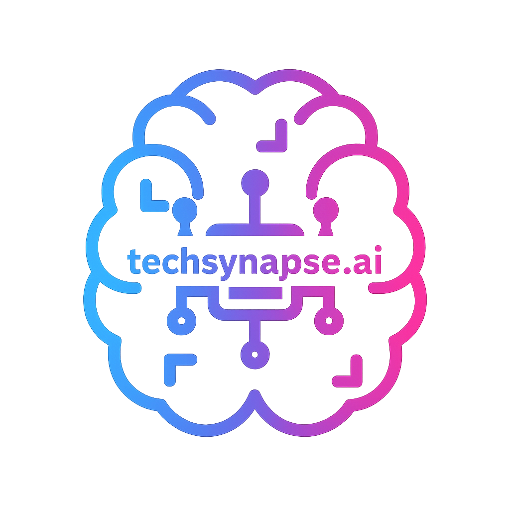

techsynapse.ai

Human centred AI, grounded in psychological research
Publications
Integrating Psychological Theories into AI Design: A Narrative Review of Human-Centred Artificial Intelligence (HCAI)
Psychology, 2025
DOI:
10.4236/psych.2025.169061
Trust, but Verify: A Reflexive Thematic Analysis of Human-AI Interaction
Advances in Social Sciences Research Journal, 2025
DOI:
10.14738/assrj.1211.19642
Contact
Tayyab Khan
tayyab.khan@techsynapse.ai